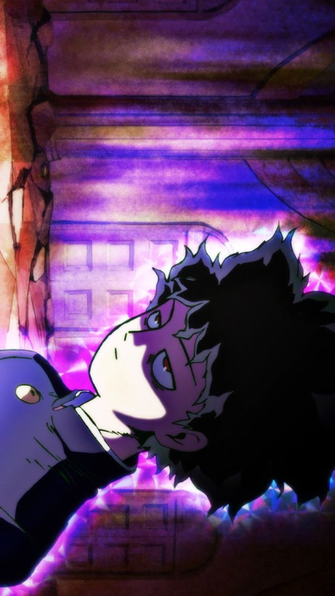
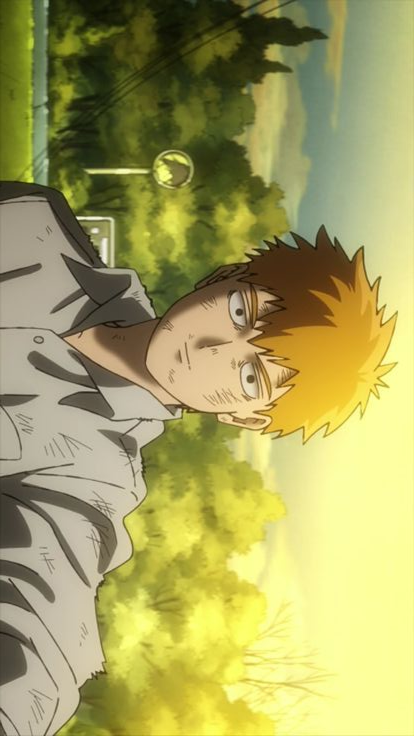
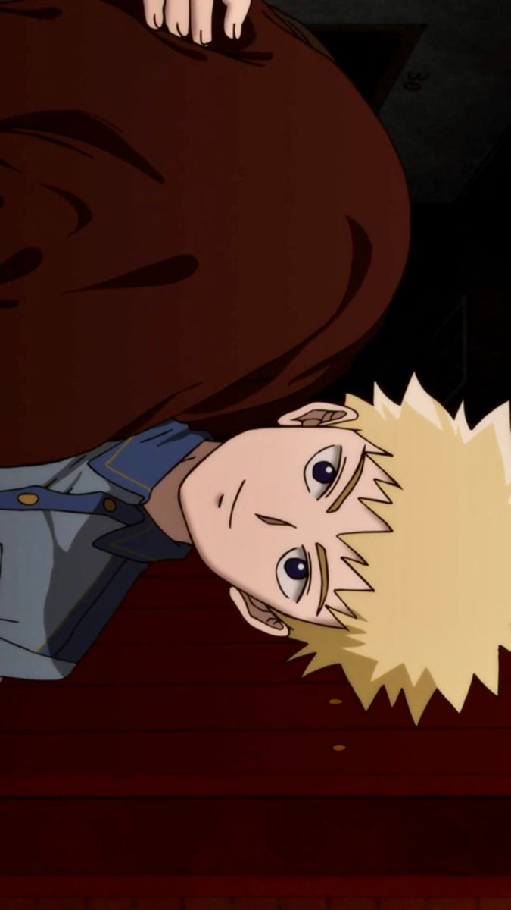
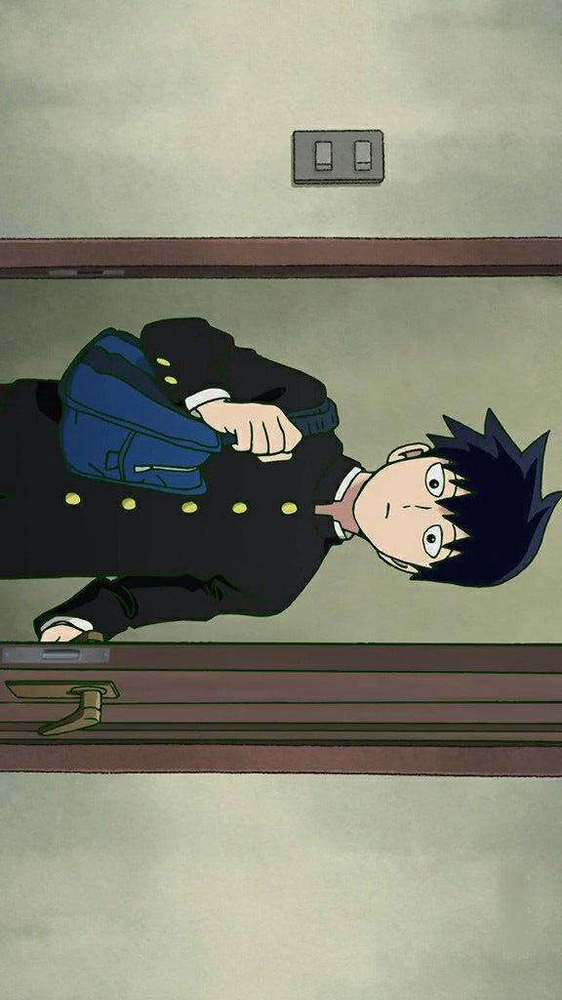
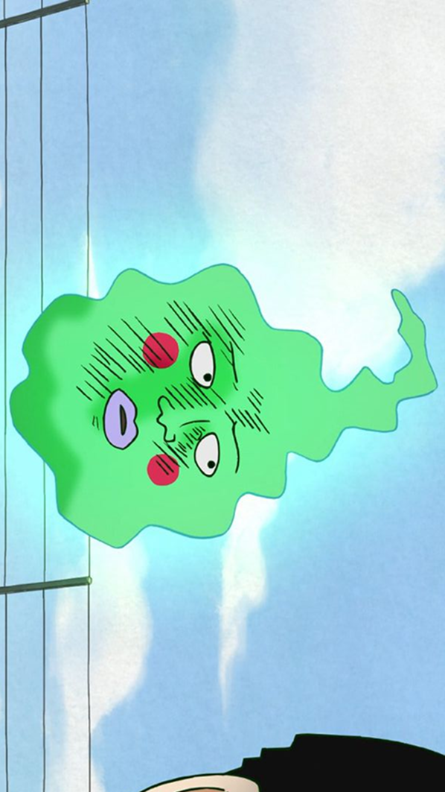

ARQUIVO DE INDIVÍDUOS
Consulte os registros de indivíduos conhecidos pela organização. Humanos, paranormais e entidades espirituais. Todos devidamente documentados.
1/2
SHIGEO KAGEYAMA

ARATAKA REIGEN

TERUKI HANAZAWA

RITSU KAGEYAMA

COVINHAS
